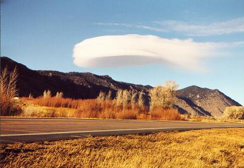

| cooling |
| home page |
| Figures 1 and 2 show the variation of cooling and heating capacities with applied current for the Terraview LC3-1000 (a liquid to liquid thermoelectric heat exchanger) which represents a typical thermoelectric system. . thermoelectric cooling - Solid State Cooling Systems - heating and cooling systems . Specializing in thermoelectric cooling thermoelectric cooler thermoelectric laser cooling heating and cooling system heating cooling systems cooling systems temperature controllers temperature control chillers liquid chillers heat exchangers heat exchanger liquid heat exchangers thermoelectric module thermoelectric devices thermoelectric modules thermoelectric device thermoelectric cooling module thermoelectric power thermoelectric cooler thermoelectric refrigeration thermoelectric temperature controller cold plates liquid cold plates cooling thermoelectrics DC power supplies Solid State Cooling Systems incorporates domestic and internationally manufactured thermoelectric modules into the heat exchangers we design. For detailed technical information on modules, we recommend you consult the web site of any thermoelectric module manufacturer. |
|  |
| Cooling with fresh water eliminates the sinking hazard and corrosion that sea raw water brings, and the basically room temperature cooling water of these systems eliminates the need to insulate the water lines, greatly reducing your installation expense in labor and material. . Now you can benefit from the numerous advantages of self-contained systems without pumping sea water throughout your vessel. With a flooded system you eliminate the head pressure from distances ADWL - only frictional losses need to be considered, which is ideal for multi-level applications and installations well above the water line, such as large ships and oil rigs. You can eliminate the heat exchanger and raw water pump depicted below by using a keel cooler - our staff will assist you in deciding what system best suits your needs. |